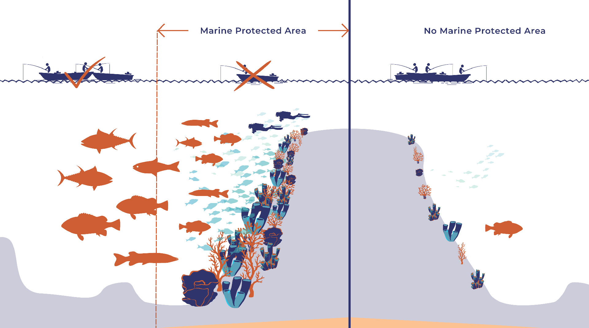
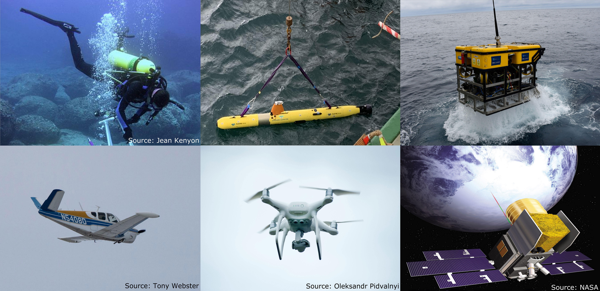
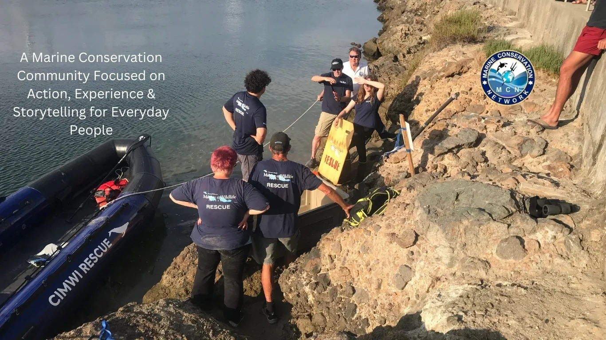
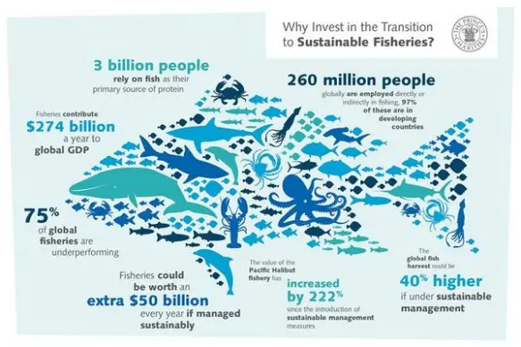
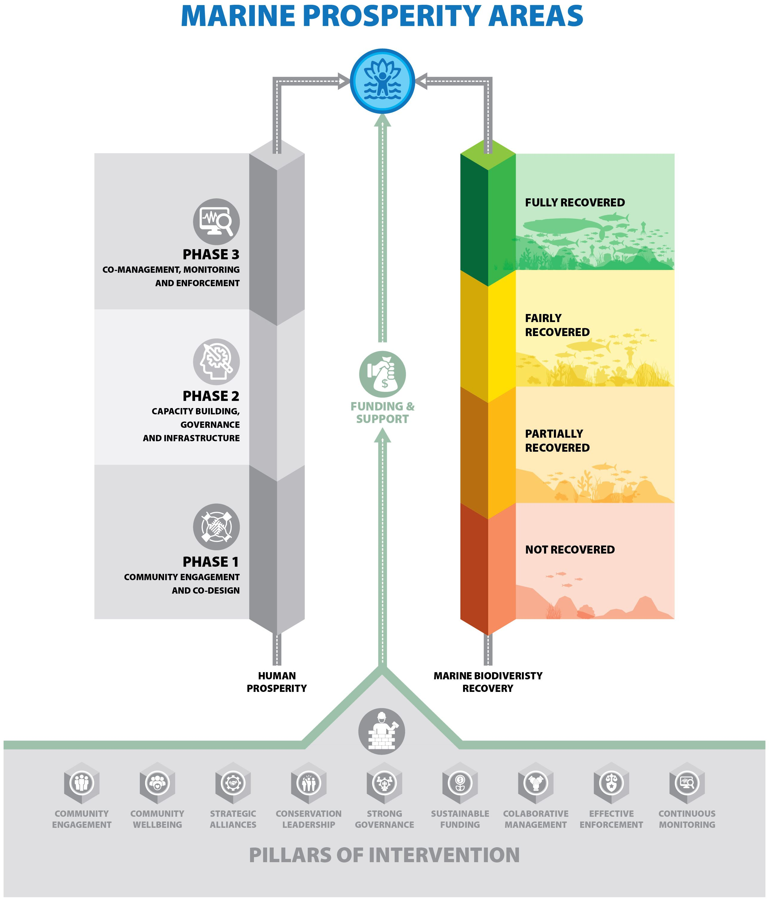

Quick Links
Marine Protected Areas (MPAs)
Marine Protected Areas (MPAs) are designated zones in oceans and seas where human activities are regulated to protect marine ecosystems and biodiversity. These areas can range from fully protected reserves to zones with limited fishing or tourism activities.
- Global Example
- The Seychelles has established two MPAs as part of a debt-for-nature swap, protecting 210,000 square kilometers of its waters. Similarly, Australia has created two national marine parks covering 740,000 square kilometers, ensuring that 45% of its marine territory is protected
- Benefits
- MPAs allow ecosystems to recover from overfishing, pollution, and habitat destruction. For instance, Mediterranean MPAs have enabled the recovery of red coral populations
- Challanges
- Enforcement and monitoring remain critical issues. In some regions, illegal activities like trawling persist even within protected zones
Technological Inovations in Marine Conservation
Advancements in technology are transforming how marine conservation is conducted by improving monitoring, enforcement, and restoration efforts.
- High Tech Tools
- Technologies such as underwater drones, satellite imaging, and AI-powered data analysis enhance the ability to track migratory species, monitor coral reef health, and detect illegal fishing activities
- Applications
- In the Caribbean, technological innovations are being used to conserve coral reefs threatened by climate change and pollution. These tools also facilitate public engagement by providing accessible data on marine health
- Future Potential
- he integration of technology with conservation strategies can foster global collaboration and improve the effectiveness of marine protection initiatives
Community Led Conservation Initiatives
Local communities and indigenous peoples play a crucial role in marine conservation by combining traditional knowledge with modern practices.
- Examples
- The Pure Ocean Fund emphasizes projects led by local communities that focus on preserving blue carbon ecosystems like mangroves and seagrasses
- Benefits
- : Community-led initiatives ensure that conservation efforts align with local socio-economic needs while fostering stewardship among residents.
- Challenges
- Balancing immediate economic pressures with long-term ecological benefits can be difficult for communities dependent on fishing or tourism
Addressing Fisheries Sustainability
Sustainable fisheries management is essential for maintaining fish stocks while supporting livelihoods dependent on fishing.
- UK's Marine Strategy
- The UK’s 2025 Marine Strategy includes measures such as implementing the Fisheries Act 2020 to manage fish stocks sustainably, reducing bycatch, and expanding MPAs to protect vulnerable species like bottlenose dolphins
- Global Agreements
- The World Trade Organization's Agreement on Fisheries Subsidies aims to eliminate harmful subsidies that contribute to overfishing and illegal fishing practices
- Challanges
- Climate change impacts fish distribution and stock levels, complicating sustainable management efforts
Holistic Approaches: Marine Prosperty Areas(MPpAs)
Marine Prosperity Areas represent a new model for conservation that integrates ecological restoration with human well-being.
- Concept
- MPpAs focus on aligning ecological recovery with socio-economic development through targeted financial investments. This approach ensures that both people and ecosystems thrive during restoration periods
- Implementation
- Governments, NGOs, and local stakeholders are encouraged to adopt MPpAs as a cornerstone of global conservation strategies. These areas prioritize community upliftment alongside environmental goals
- Significance
- By addressing immediate socio-economic needs while promoting long-term ecological health, MPpAs offer a balanced solution to traditional conservation challenges